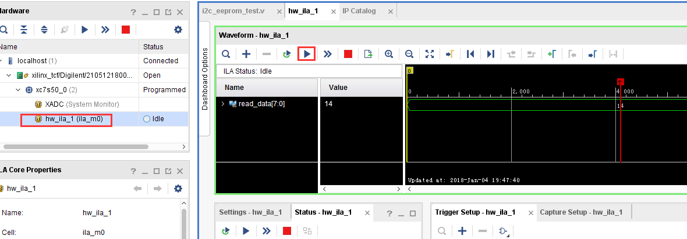

I2C接口EEPROM实验#
实验Vivado工程为“i2c_eeprom_test”。
本实验通过使用开源软件opencores上的I2C master控制器去控制I2C接口的EEPROM读写，练习如何有效的使用开源代码提升开发效率。
实验原理#
在开发板上，FPGA芯片通过I2C总线连接EEPROM 24LC04,I2C的两根总线各上拉一个4.7K的电阻到3.3V，所以当总线上没有输出时会被拉高， 24LC04的写保护没有使能，不然FPGA会无法写入数据。因为在电路上A0~A2都为低，所以24LC04的设备地址为0xA0。

AX7020/AX7010开发板部分电路
I2C总线协议和时序#
I2C标准速率为100kbit/s，快速模式400kbit/s，支持多机通讯，支持多主控模块，但同一时刻只允许有一个主控。由数据线SDA和时钟SCL构成串行总线；每个电路和模块都有唯一的地址。
在这里以AT24C04为例说明I2C读写的基本操作和时序，I2C设备的操作可分为写单个存储字节，写多个存储字节，读单个存储字节和读多个存储字节。各个操作如下图所示。
下面对I2C总线通信过程中出现的几种信号状态和时序进行分析。
①总线空闲状态
I2C总线总线的SDA和SCL两条信号线同时处于高电平时，规定为总线的空闲状态。此时各个器件的输出级场效应管均处在截止状态，即释放总线，由两条信号线各自的上拉电阻把电平拉高。
②启动信号(Start)
在时钟线SCL保持高电平期间，数据线SDA上的电平被拉低（即负跳变），定义为I2C总线总线的启动信号，它标志着一次数据传输的开始。启动信号是由主控器主动建立的，在建立该信号之前I2C总线必须处于空闲状态，如下图所示。
③停止信号(Stop)
在时钟线SCL保持高电平期间，数据线SDA被释放，使得SDA返回高电平（即正跳变），称为I2C总线的停止信号，它标志着一次数据传输的终止。停止信号也是由主控器主动建立的，建立该信号之后，I2C总线将返回空闲状态。
④数据位传送
在I2C总线上传送的每一位数据都有一个时钟脉冲相对应（或同步控制），即在SCL串行时钟的配合下，在SDA上逐位地串行传送每一位数据。进行数据传送时，在SCL呈现高电平期间，SDA上的电平必须保持稳定，低电平为数据0，高电平为数据1。只有在SCL为低电平期间，才允许SDA上的电平改变状态。
⑤应答信号（ACK和NACK）
I2C总线上的所有数据都是以8位字节传送的，发送器每发送一个字节，就在时钟脉冲9期间释放数据线，由接收器反馈一个应答信号。应答信号为低电平时，规定为有效应答位（ACK简称应答位），表示接收器已经成功地接收了该字节；
应答信号为高电平时，规定为非应答位（NACK），一般表示接收器接收该字节没有成功。对于反馈有效应答位ACK的要求是，接收器在第9个时钟脉冲之前的低电平期间将SDA线拉低，并且确保在该时钟的高电平期间为稳定的低电平。
如果接收器是主控器，则在它收到最后一个字节后，发送一个NACK信号，以通知被控发送器结束数据发送，并释放SDA线，以便主控接收器发送一个停止信号。
程序设计#
I2C时序虽然简单，但是写的不好也会出现很多问题，在开源网站http://opencores.org/上我们可以找到很多非常好的代码，这些代码大部分都提供详细的文档和仿真。俗话说，他山之石，可以攻玉，恰当的使用开源代码，不光能提升我们的开发效率，也能学习别人的开发思路。由于代码大部分都是经过很长时间反复修改，反复精炼后的，所以有些代码理解起来可能比较困难，在不能很好的理解别人代码的时候，最好的办法就是仿真。
从IP core文档得知，i2c_master_byte_ctrl模块主要完成一个字节的读写，我们只需要按照I2C读写的要求，完成设备地址、寄存器地址、数据等读写即可。
i2c_master_top模块是对i2c_master_byte_ctrl模块的再次封装，完成一个寄存器的读写，由于不同的设备寄存器可能是8bit，也可能是16bit，这里i2c_addr_2byte信号来控制寄存器地址是8位还是16位。
i2c_master_top模块状态机，如果是写寄存器操作，先写一个字节设备地址（写操作），再写1个字节或2个字节的寄存器地址，再写一个字节的数据；如果是读操作，先写一个字节的设备地址（写操作），再写1个字节或2字节的寄存器地址，完成地址的写入，再次写设备地址（读操作），然后读取一个字节的数据。不管怎么说，程序设计都是要满足芯片时序要求的，所以在阅读程序之前最好先把芯片的数据手册仔细阅读一遍。
i2c_master_top状态机
信号名称 |
方向 |
说明 |
|---|---|---|
clk |
i n |
时钟输入 |
rst |
i n |
异步复位输入，高复位 |
clk_div_cnt |
i n |
I2C时钟分频因子，等于系统时钟频率/（5 * I2C时钟频率） - 1。例如50Mhz系统 时钟，100Khz的I2C，配置为99，400Khz的I2C，配置为24。 |
scl_pad_i |
i n |
I2C时钟数据输入，本实验可忽略 |
scl_pad_o |
o u t |
I2C时钟输出 |
scl_padoen_o |
o u t |
I2C时 钟输出使能，低有效，I2C外部有上拉电阻，如果输出高阻态 ，则会被拉到高电平，在本实验中，高电平输出时输出高阻 |
sda_pad_i |
i n |
I2C数据输入 |
sda_pad_o |
o u t |
I2C数据输出 |
sda_padoen_o |
o u t |
I2C数据 输出使能，低有效。在本实验中，高电平输出时输出高阻。 |
i2c_addr_2byte |
i n |
寄存器地址是8位还是16位，1：16位，0:8位 |
i2c_read_req |
i n |
I2C寄存器读请求 |
i2c_read_req_ack |
o u t |
I2C寄存器读请求应答 |
i2c_write_req |
i n |
I2C寄存器写请求 |
i2c_write_req_ack |
o u t |
I2C寄存器写请求应答 |
i2c_slave_dev_addr |
i n |
I2C设备地址，8bit，最低位忽略，有效数据位是高7位。 |
i2c_slave_reg_addr |
i n |
寄存器地址，8位地址时，低8位有效 |
i2c_write_data |
i n |
写寄存器数据 |
i2c_read_data |
o u t |
读寄存器数据 |
error |
o u t |
设备无应答错误 |
i2c_master_top模块端口
i2c_eeprom_test模块完成EEPROM的读写，EEPROM设备地址是A0，程序中将地址00的数据读出，然后通过LED显示，在按键按下时，数字加一并再次写入EEPROM并显示出来。在I2C控制器中，代码的大部分功能在备注中也有很多批注。
module i2c_eeprom_test(
input sys_clk, //system clock 50Mhz on board
input rst_n, //reset ,low active
input key, //data will add 1 when push key
inout i2c_sda,
inout i2c_scl,
output [3:0] led
);
localparam S_IDLE = 0;
localparam S_READ = 1;
localparam S_WAIT = 2;
localparam S_WRITE = 3;
reg[3:0] state;
wire button_negedge;
reg[7:0] read_data;
reg[31:0] timer;
wire scl_pad_i;
wire scl_pad_o;
wire scl_padoen_o;
wire sda_pad_i;
wire sda_pad_o;
wire sda_padoen_o;
reg[ 7:0] i2c_slave_dev_addr;
reg[15:0] i2c_slave_reg_addr;
reg i2c_write_req;
wire i2c_write_req_ack;
reg[ 7:0] i2c_write_data;
reg i2c_read_req;
wire i2c_read_req_ack;
wire[7:0] i2c_read_data;
assign led = ~read_data[3:0];
ax_debounce ax_debounce_m0
(
.clk (sys_clk),
.rst (~rst_n),
.button_in (key),
.button_posedge (),
.button_negedge (button_negedge),
.button_out ()
);
always@(posedge sys_clk or negedge rst_n)
begin
if(rst_n == 1'b0)
begin
state <= S_IDLE;
i2c_write_req <= 1'b0;
read_data <= 8'h00;
timer <= 32'd0;
i2c_write_data <= 8'd0;
i2c_slave_reg_addr <= 16'd0;
i2c_slave_dev_addr <= 8'ha0;//1010 000 0, device address
i2c_read_req <= 1'b0;
end
else
case(state)
S_IDLE:
begin
if(timer >= 32'd499_999)//wait 10ms
state <= S_READ;
else
timer <= timer + 32'd1;
end
S_READ:
begin
if(i2c_read_req_ack) //if read request ack, then i2c read data valid
begin
i2c_read_req <= 1'b0;
read_data <= i2c_read_data;
state <= S_WAIT;
end
else
begin
i2c_read_req <= 1'b1;
i2c_slave_dev_addr <= 8'ha0;
i2c_slave_reg_addr <= 16'd0;
end
end
S_WAIT:
begin
if(button_negedge) //when push button, then data add 1, and switch to write state
begin
state <= S_WRITE;
read_data <= read_data + 8'd1;
end
end
S_WRITE:
begin
if(i2c_write_req_ack) //if write request ack, then switch to read state
begin
i2c_write_req <= 1'b0;
state <= S_READ;
end
else
begin
i2c_write_req <= 1'b1;
i2c_write_data <= read_data;
end
end
default:
state <= S_IDLE;
endcase
end
//i2c bidirection control
assign sda_pad_i = i2c_sda;
assign i2c_sda = ~sda_padoen_o ? sda_pad_o : 1'bz;
assign scl_pad_i = i2c_scl;
assign i2c_scl = ~scl_padoen_o ? scl_pad_o : 1'bz;
i2c_master_top i2c_master_top_m0
(
.rst (~rst_n),
.clk (sys_clk),
.clk_div_cnt (16'd99), //Standard mode:100Khz; prescale = 50MHz/(5*100Khz) - 1
// I2C signals
// i2c clock line
.scl_pad_i (scl_pad_i), // SCL-line input
.scl_pad_o (scl_pad_o), // SCL-line output (always 1'b0)
.scl_padoen_o (scl_padoen_o), // SCL-line output enable (active low)
// i2c data line
.sda_pad_i (sda_pad_i), // SDA-line input
.sda_pad_o (sda_pad_o), // SDA-line output (always 1'b0)
.sda_padoen_o (sda_padoen_o), // SDA-line output enable (active low)
.i2c_addr_2byte (1'b0), //register address is 1 byte
.i2c_read_req (i2c_read_req),
.i2c_read_req_ack (i2c_read_req_ack),
.i2c_write_req (i2c_write_req),
.i2c_write_req_ack (i2c_write_req_ack),
.i2c_slave_dev_addr (i2c_slave_dev_addr),
.i2c_slave_reg_addr (i2c_slave_reg_addr),
.i2c_write_data (i2c_write_data),
.i2c_read_data (i2c_read_data),
.error ()
);
ila_0 ila_m0 (
.clk (sys_clk), // input wire clk
.probe0 (read_data) // input wire [7:0] probe0
);
endmodule
根据IP核文档中说明，i2c核用的是5倍的SCL时钟，如果想得到100KHz的I2C时钟，在本实验中prescale就等于参考时钟50MHz除以5*100KHz，再减去1，也就是99，这一点要注意。
实验现象#
下载实验程序后，可以看到LED显示一个二进制数字，这个数字是存储在EEPROM中00地址的数据，数据是随机的，这个时候按键PL KEY2按下，数字加一，并写入了EEPROM，再次下载程序，可以看到直接显示更新后的数据。
在程序中我们添加了逻辑分析仪，用来观察读数据的值，每按一次PL KEY2键运行一次可以看到数据增加1。
